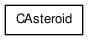
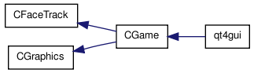
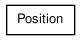
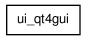

Pagina Principale
Classi
File
Elenco dei tipi composti
Gerarchia delle classi
Membri dei composti
Grafico della gerarchia delle classi
Vai alla gerarchia delle classi (testuale)




Tutto
Classi
File
Funzioni
Variabili
Definizioni
Generato il Tue Aug 31 17:13:09 2010 per FacePad da
1.6.3
 1.6.3
1.6.3